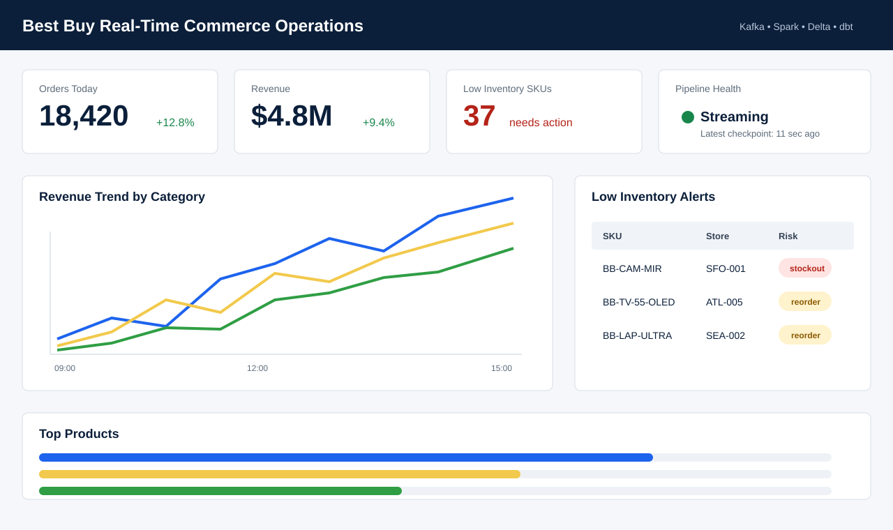

Schema Contracts
Every event topic has required fields, expected types, and event-time rules.
Kafka + Spark + Delta Lake + dbt
A portfolio-ready streaming data platform that simulates how a retailer processes orders, inventory updates, pricing changes, and user activity into analytics-ready lakehouse tables and dashboards.

Architecture
The system emits realistic commerce events, streams them through Kafka, parses and validates them with Spark Structured Streaming, then stores raw, cleaned, quarantined, and analytics-ready data in a Delta Lakehouse layout.
Data Quality
Every event topic has required fields, expected types, and event-time rules.
Topic-specific natural keys remove repeat order, inventory, pricing, and click events.
Watermarks and lateness flags keep event-time analytics honest.
Invalid records are retained for investigation instead of silently disappearing.
Analytics
dbt turns cleaned Silver data into readable business models such as daily revenue, top products, order facts, and inventory risk. The models include tests for nulls, accepted values, and non-negative metrics.
orders_goldOrder-level fact tablerevenue_dailyRevenue by date, category, and channeltop_productsProduct leaderboard by revenue and unitsinventory_riskStockout and reorder alertsRun Locally
docker compose up -d zookeeper kafka kafka-ui kafka-init
python3 kafka-producer/producer.py --bootstrap-server localhost:29092 --rate-per-second 5
docker compose --profile stream up generator streaming-job
Kafka UI runs on localhost:8080. The README includes local Spark, dbt, and
health-check commands.